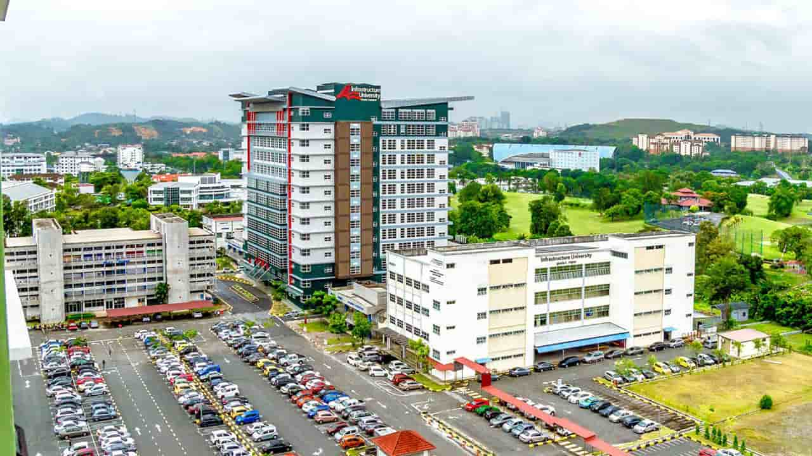
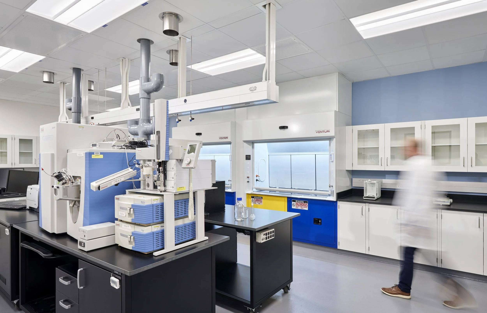
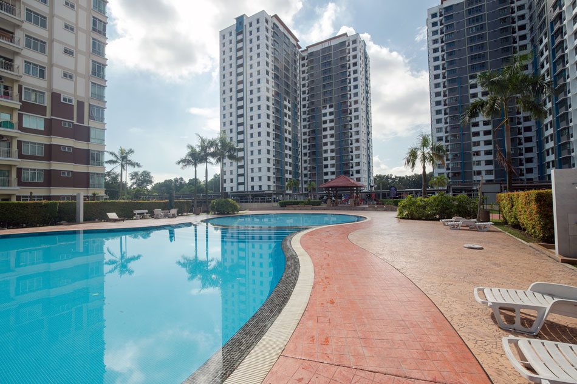
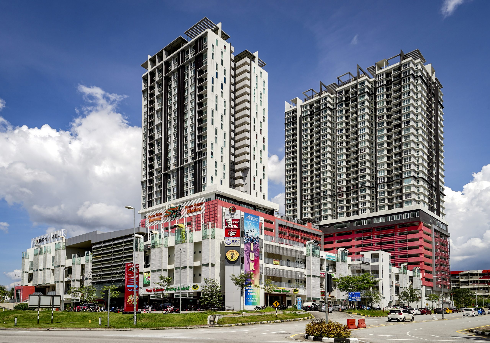
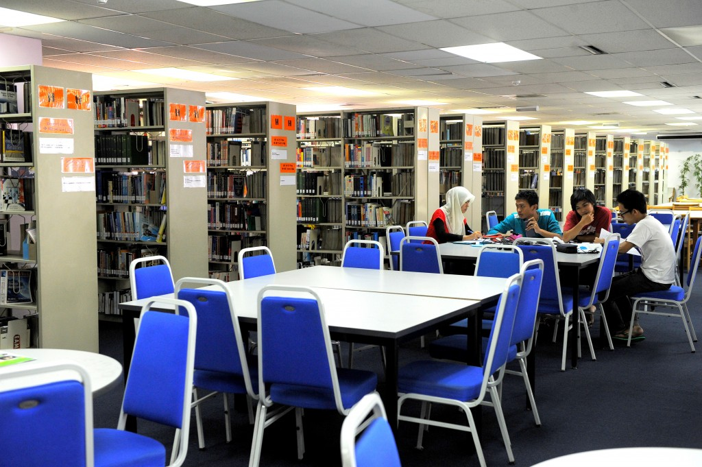

KLUST (formerly IUKL) is Malaysia's first and only university specializing in Infrastructure. For over 20 years, it has been the premier destination for Engineering, Architecture, and Quantity Surveying education.
Now rebranded as KLUST, it continues its legacy of producing "Technopreneurs" with a strong focus on practical skills, sustainability, and real-world technology application.





KLUST is located within De Centrum City, a 100-acre education township. It is strategically situated between Kuala Lumpur, Putrajaya, and Cyberjaya, accessible via major highways (SILK, PLUS).
De Centrum City, Jalan Ikram-Uniten, 43000 Kajang, Selangor
Campus is directly connected to the mall
Free bus to KTM Serdang & MRT Kajang
Premium student accommodation on-site